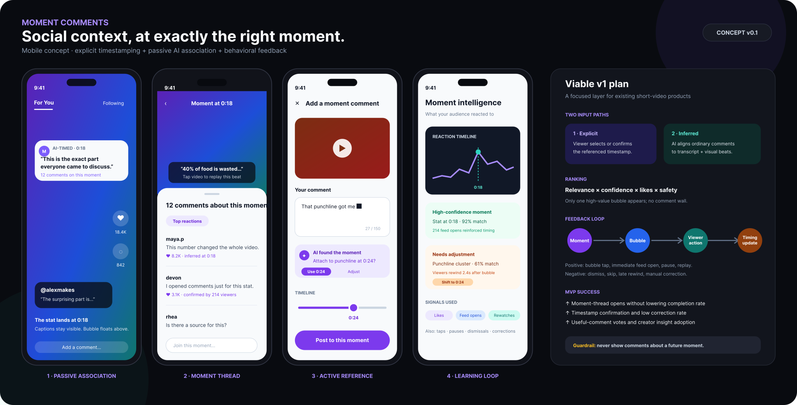

New features / Feature concept
The right conversation. At the right moment.
After a punchline or surprising claim, people often open the comments to see whether others noticed the same thing. This concept keeps that social context connected to the moment itself.
Start with the moment
One concise comment bubble appears at a relevant point in playback. Opening it reveals a moment-specific thread, with options to replay the beat, join the discussion, or return to the full feed.
Make the association correctable
A commenter can explicitly choose a timestamp or confirm a suggested one. Inferred associations would compare comment meaning with transcript and scene context. Likes can help rank comments, but are not proof that a timestamp is correct.
Keep the viewer in control
The proposed behavior uses one bubble at a time, a confidence threshold, frequency limits, spoiler prevention, and a hide-reactions control. A viewer correction is stronger evidence than an ambiguous pause or scroll.
The next test
Test whether viewers understand the association, find the comments useful, and can correct timestamps easily. Measure thread opens alongside video completion, dismissals, and correction rates before claiming an improvement.
ARTIFACTS & EVIDENCE
Explore the work.
A four-state visual concept and exported SVG board. No connected prototype, trained model, live video integration, or measured user outcome yet.
Figma files may require sign-in or permission. Public documentation remains available on GitHub .
